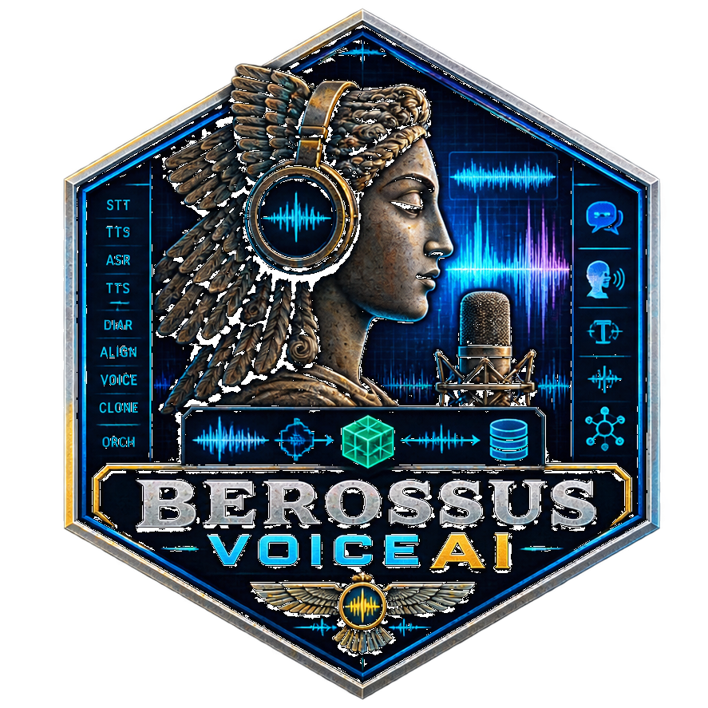

PROJECT
BerossusVoiceAI
Modular voice-data tooling for TTS, STT, segmentation, alignment, speaker labeling, and controlled dataset creation.

ZZX-LABS R&D // SOFTWARE // WEB MIRROR
Modular TTS/STT stack for Berossus with browser speech synthesis, speech recognition, local audio analysis, VAD-style segmentation, transcript alignment, speaker labeling, and dataset orchestration.
TTS / STT / DATASET ORCHESTRATION
SYSTEM-VOICE SYNTHESIS
Synthesize text with the browser's installed speech voices and configure rate, pitch, volume, and voice selection.
BROWSER SPEECH RECOGNITION
Use the browser speech-recognition interface where available. Browser implementations may use an online service.
LOCAL AUDIO CORPUS
Import recordings, decode them locally, measure duration/sample-rate/peak/RMS, and generate VAD-style energy segments.
Audio is decoded locally through Web Audio.
TRANSCRIPT TIMING
Attach transcript lines to a selected audio file and distribute them across detected segments or proportionally across duration.
SPEAKER-LABEL WORKSPACE
Assign speaker labels to aligned segments. The static browser build does not claim biometric speaker identification.
DATASET ORCHESTRATION
Export file metadata, segments, aligned utterances, speaker labels, and provider configuration as JSON/JSONL manifests.
PROJECT
Modular voice-data tooling for TTS, STT, segmentation, alignment, speaker labeling, and controlled dataset creation.
BROWSER BOUNDARY
TTS uses installed system voices. Speaker diarization is a transparent labeling workspace unless the user deliberately connects an external model provider.